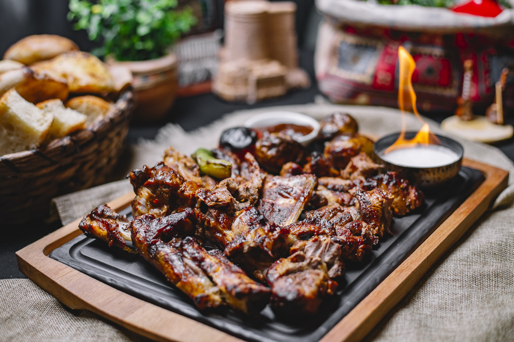

Bienvenidos a El Asador de Rosario
Situado en la vera del Río Paraná en la ciudad de Rosario, El Asador es un restaurante donde la cocina a la parrilla se convierte en arte. Cada plato es elaborado con ingredientes de la más alta calidad, con énfasis especial en la frescura y el sabor.
Vení a disfrutar de una experiencia culinaria única. En El Asador, cada comida es un homenaje a la tradición y la innovación.